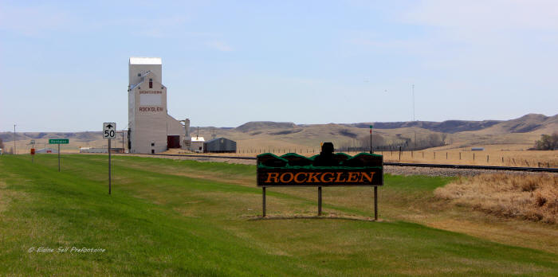

More information about Goosecreek Bernese
Our family lives in one of the most beatiful areas in Saskatchewan, Canada. We live in the small community of Rockglen, SK. We are nuzzled in the Goose Creek Bottom, surrounded by beautiful rolling hills. It is a beautiful agricultural community, with ranches and rolling hills of grain.

My husband & I have lived on our beatiful Ranch fo the last 9 years. Where we have welcomed our beautiful 3 children. We run a large & cow/calf operation with my In-laws. We also have around 2000 acres of grain land along side. our cattle and our Berners.
We have chose the Bernese Mountain Dog, because of there gentle, diposition, loyalty, and devotion. As a family that seems to always be growing we just love this breed. I grew up always having dogs. So it seems fitting that I choose this amazing breed for my children enjoy and grow up with as well.